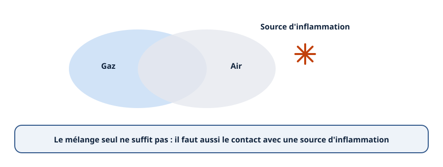
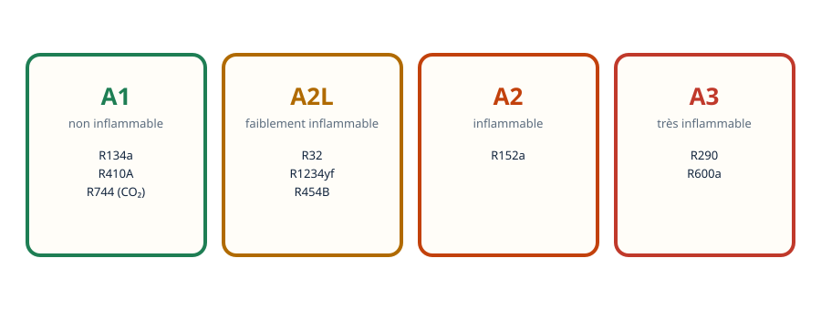
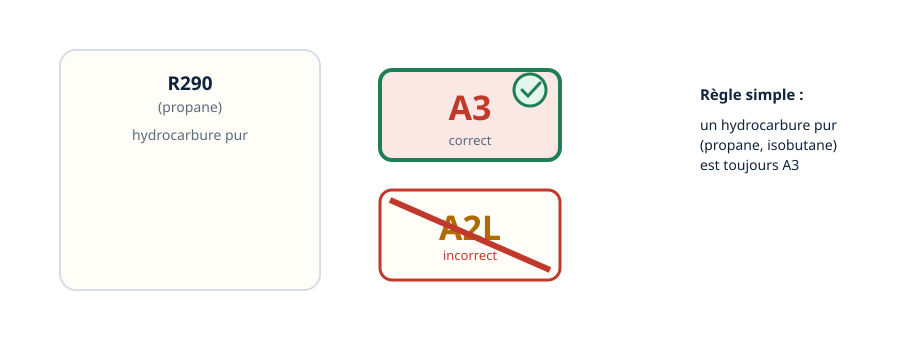
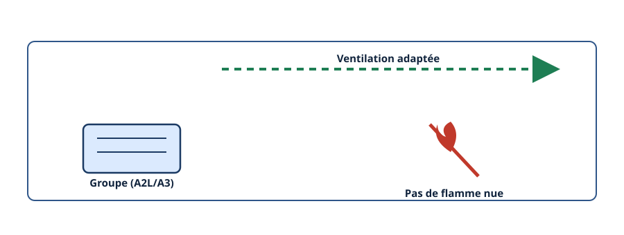
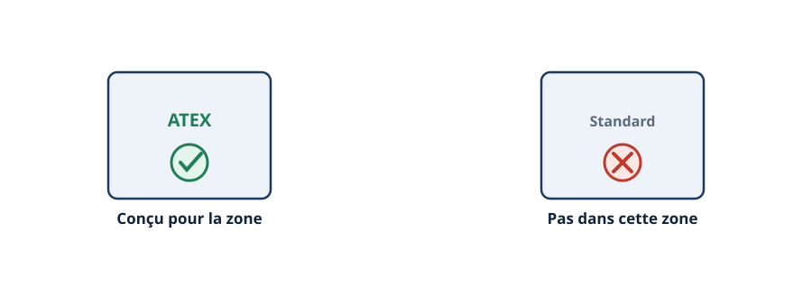
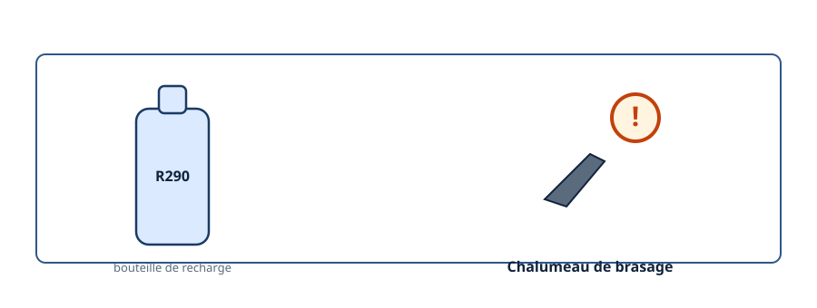
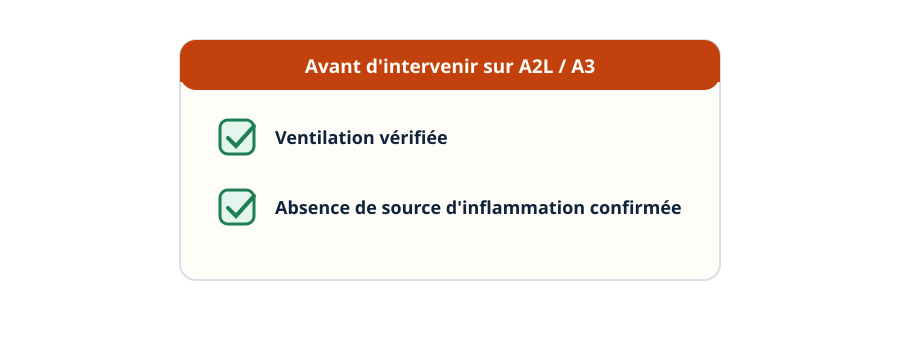
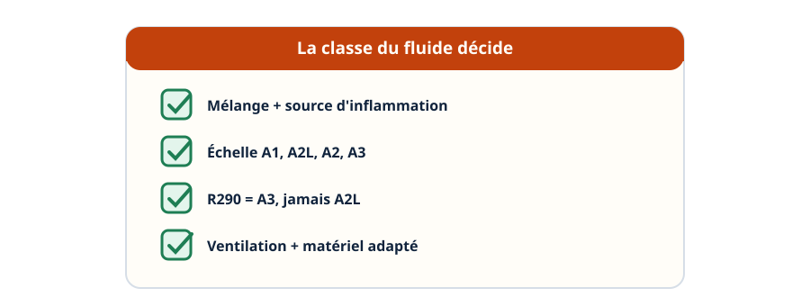

Zones ATEX — quand un fluide inflammable change la donne
Mini-station commentée · 8 écrans et 4 questions · environ 10 minutes
Objectif
À la fin de la station, vous savez comment se forme une atmosphère explosive, situer un fluide sur l'échelle A1 / A2L / A2 / A3, éviter le piège classique du R290, et dire ce que la classe d'un fluide change dans un local et sur le matériel utilisé.
Chaque écran peut être expliqué à voix haute : le bouton « Écouter » commente ce que vous voyez. Rien n'est dit qui ne soit aussi écrit.
1 / 12
Écran 1 sur 8
Le mécanisme d'une atmosphère explosive
Une atmosphère explosive se forme quand un gaz ou une vapeur inflammable se mélange à l'air dans une proportion qui peut s'enflammer au contact d'une source d'inflammation — une étincelle, une flamme, une surface chaude.

Le mélange seul ne suffit pas : il faut aussi une source d'inflammation.
Écran 2 sur 8
La classification de sécurité des fluides
NF EN 378 et ASHRAE 34 classent les fluides selon leur inflammabilité : A1 non inflammable (R134a, R410A, R744/CO₂), A2L faiblement inflammable (R32, R1234yf, R454B), A2 inflammable (R152a), A3 très inflammable (R290, R600a).
Le point à retenir : un fluide A2L ou A3 change tout ce qui suit — un A1 ne pose pas ce problème.

Quatre classes, une intensité d'inflammabilité croissante.
Écran 3 sur 8
Le piège classique : R290 n'est pas A2L
Le R290, le propane, est un hydrocarbure pur : il est classé A3, très inflammable — jamais A2L. Confondre les deux est une erreur fréquente : les précautions à prendre ne sont pas les mêmes.

Un hydrocarbure pur est A3, pas A2L.
Écran 4 sur 8
Dans la pièce : ventilation et absence de source d'inflammation
Un local contenant un groupe chargé en fluide A2L ou A3 impose une ventilation adaptée et l'absence de sources d'inflammation à proximité — pas de flamme nue, pas d'appareillage électrique non conçu pour la zone.

Deux précautions attendues dans la pièce : ventiler, écarter les sources d'inflammation.
Écran 5 sur 8
Sur le matériel : un appareillage conçu pour la zone
Dans une zone où une atmosphère explosive peut apparaître, le matériel électrique utilisé doit être conçu pour cet usage — un matériel dit « ATEX », marqué en conséquence.

Un appareil standard n'a rien à faire dans une zone à risque.
Écran 6 sur 8
Exemple : une recharge de R290 en local mal ventilé
Avant une recharge de fluide R290 dans un local technique mal ventilé, le raisonnement doit s'enclencher avant de sortir le matériel de brasage à flamme nue — le brasage produit justement une flamme, source d'inflammation.

Le chalumeau et la recharge ne se croisent pas sans réflexion.
Écran 7 sur 8
Le réflexe avant d'intervenir sur un A2L ou A3
Avant une intervention sur un circuit chargé en fluide A2L ou A3, vérifier la ventilation du local et l'absence de source d'inflammation — ne pas traiter cette intervention comme celle d'un fluide A1.

Le réflexe avant toute intervention sur un A2L ou A3.
Écran 8 sur 8
Bilan et le réflexe
Une atmosphère explosive naît du mélange d'un gaz inflammable et de l'air, au contact d'une source d'inflammation.
A1 non inflammable, A2L faiblement inflammable, A2 inflammable, A3 très inflammable.
Piège classique : le R290 est A3, jamais A2L.
Dans la pièce : ventilation, absence de flamme nue. Sur le matériel : appareillage conçu pour la zone.
Le réflexe : ne jamais traiter un A2L ou A3 comme un A1.
Le réflexe : la classe du fluide décide de la ventilation et du matériel, pas l'habitude.

La classe du fluide décide, pas l'habitude.
Question 1 sur 4
Une atmosphère explosive se forme quand…
Rappel de l'écran 1 — le mélange et la source d'inflammation.
Question 2 sur 4
Le R290 (propane) est classé…
Rappel de l'écran 3 — le piège classique.
Question 3 sur 4
Un local contenant un groupe chargé en fluide A3 impose…
Rappel de l'écran 4 — ventilation et absence de source d'inflammation.
Question 4 sur 4
Avant une recharge de R290 dans un local mal ventilé, quel raisonnement s'enclenche ?
Rappel de l'écran 6 — la recharge et le chalumeau ne se croisent pas sans réflexion.
Les correspondances de la station
L'habilitation (sous-ligne Électrique) — la règle d'un côté, le geste protégé de l'autre.
NF EN 378 (sous-ligne Fluidique) — la norme complète de classification et de sécurité des fluides, dont cette station ne montre qu'un aspect.
Ces deux stations sont en préparation sur le plan du réseau.